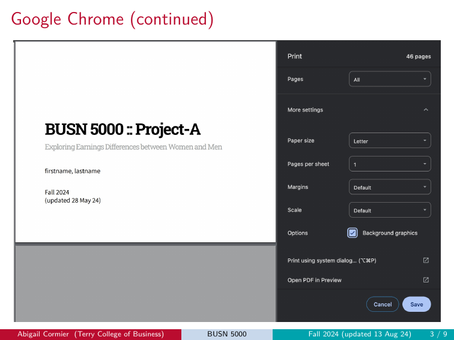
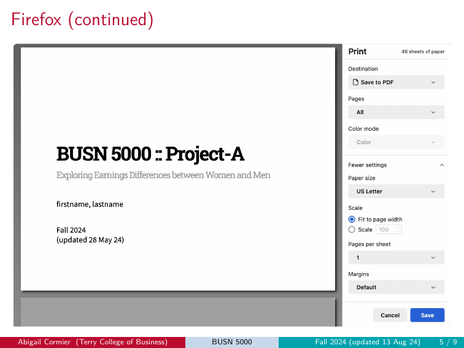

5 Submission
If you have successfully completed the Pre-project Exercise or Project Progress Check you’ve presumably mastered this process. If you have not, pay close attention because failure to follow the submission instructions to a “T” could land you in the no credit or zero score category.
First, this important reminder…
Per the syllabus: late submissions will not be accepted for the Pre-project, the Project Progress Check, or the Final Project. The relevant deadlines are on the course schedule. There are no extensions and no late-credit options.
5.1 Filename conventions
Each of the three project artifacts has a required filename. Use lowercase for first and last name, underscores between words, and the .pdf extension.
| Artifact | Filename pattern | Example |
|---|---|---|
| Pre-project | firstname_lastname_pre.pdf |
jane_doe_pre.pdf |
| Project Progress Check | firstname_lastname_progress.pdf |
jane_doe_progress.pdf |
| Final Project | firstname_lastname_project.pdf |
jane_doe_project.pdf |
5.2 The submission workflow at a glance
Each submission goes through the same three steps:
Knit your
.Rmdto an HTML document by clicking the Knit button in the editor pane. “Knit to HTML” is the default output format, so you don’t need to select it from the drop down arrow — just click the button itself.Save the HTML document as a PDF using your browser’s print-to-PDF function following the instructions below.
Upload the PDF to the corresponding Gradescope assignment under the correct filename.
5.3 Saving the HTML document as a PDF
After knitting, the HTML output opens in your browser or in RStudio’s Viewer. If it opens in the Viewer, click the small icon at the top of the Viewer to open it in your browser.
Using your browser’s print dialog you can save as PDF following these general steps:
- Destination: “Save as PDF”
- Layout / Orientation: Landscape
- Color: Color (not Black and White)
- Margins: Default or None
- Pages per sheet: 1
- Background graphics: Enabled (this is the easy-to-miss one — without it, the colored UGA styling disappears)
Here is how those steps look in the most popular browsers:
5.3.1 Google Chrome (and Microsoft Edge)
Edge uses the same print dialog as Chrome — these steps work for both.
- Click the three vertical dots in the top-right of the browser.
- Click Print.
- Match the settings shown below — most importantly, Destination = Save as PDF, Layout = Landscape, and More settings → Background graphics = checked.

- Click Save. Use the correct filename when prompted (see Filename conventions).
5.3.2 Firefox
- Click the three horizontal lines (the “hamburger” menu) in the top-right of the browser.
- Click Print.
- Match the settings shown below across the two screens. Key settings: Destination = Save to PDF, Orientation = Landscape, and Options → Print backgrounds = checked.


- Click Save and use the correct filename.
5.3.3 Safari
- Click File in the top-left menu bar.
- Click Print.
- Match the settings shown below across the two screens. Key settings: Orientation = Landscape, Print backgrounds = checked, and the PDF dropdown in the bottom-left must be set to Save as PDF (not Print).


- Click Save and use the correct filename.
5.4 Links to benchmark reference decks
Before you submit anything to Gradescope, check your deck against the relevant benchmarks for format compliance, and in the case of the progress check, content compliance. Here are the links:
Pre-project benchmark: what your three slides should look like
Main Project knitted template: what your 35 slides should look like before artifacts are produced and your explanations added